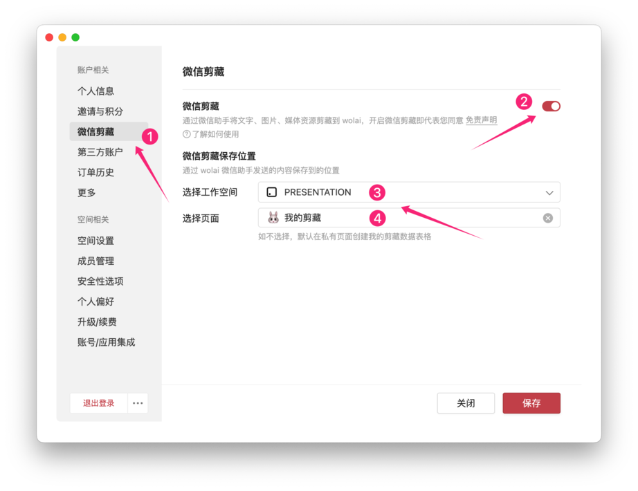
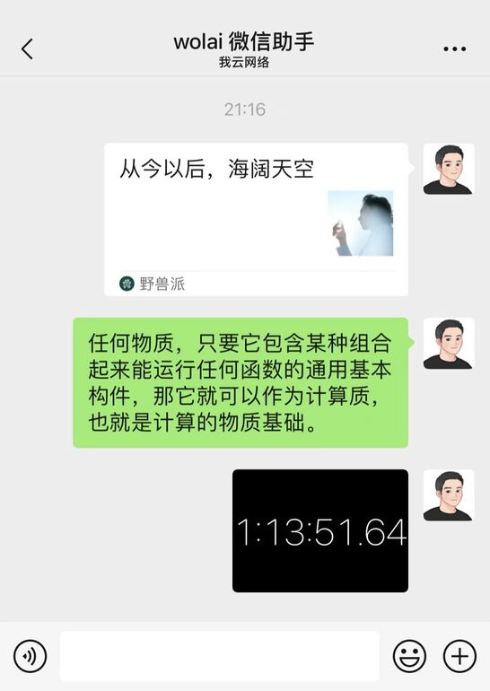

微信剪藏
使用功能强大的wolai微信剪藏，将桌面端、移动端、微信里的内容快速保存到你的工作空间指定位置。
支持微信剪藏的消息类型：文字/图片/语音/视频/文件/表情/链接/公众号文章/聊天记录
快速上手
开始使用微信剪藏，请按以下步骤操作：

1.打开桌面端wolai：设置-微信剪藏；
2.开启“微信剪藏”，如果你还未绑定微信账号，会需要你先进行微信登录绑定，已绑定则跳过此步骤；
3.选择“工作空间”（仅个人专业版及以上空间支持作为目标工作空间）；
4.选择“指定页面”作为微信内容将要保存到的位置;
5.微信扫一扫下面的二维码，将wolai微信助手添加为微信好友；
6.给wolai微信助手发送的消息就会保存到指定页面了！
